Chỉnh sửa Weight Paint¶
Tham khảo
- Mode:
Chế độ Edit Mode và Weight Paint Mode
- Menu:
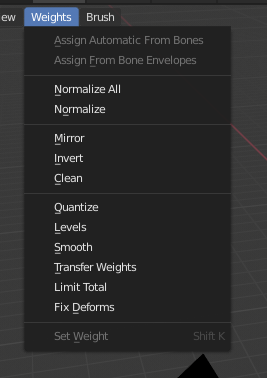
Các công cụ Weight Paint.¶
Blender cung cấp một bộ công cụ hỗ trợ cho Weight Painting.
Tùy chọn Subset
Một số công cụ còn cung cấp bộ lọc Subset để giới hạn chức năng của chúng chỉ cho các vertex group cụ thể (trong panel Adjust Last Operation, hiển thị sau khi công cụ được gọi) với các tùy chọn sau:
Active Group
Selected Pose Bones
Deform Pose Bones
All Groups
Tất cả các công cụ cũng hoạt động với Vertex Selection Masking và Face Selection Masking. Trong các chế độ này, công cụ chỉ tác động lên các vertex hoặc face được chọn.
Assign from Bone Envelopes¶
Áp dụng trọng số envelope của các bone được chọn vào vertex group đang được chọn.
Assign Automatic from Bone¶
Áp dụng từ các bone được chọn vào vertex group cùng các phương thức "tự động gán trọng số" giống như có sẵn trong menu Parent armature.
Normalize All¶
Với mỗi vertex, công cụ này bảo đảm tổng các trọng số trên tất cả vertex group bằng 1. Công cụ này chuẩn hóa tất cả các vertex group, trừ các group bị khóa vốn giữ nguyên giá trị trọng số.
- Lock Active
Giữ nguyên giá trị của group đang hoạt động trong khi chuẩn hóa tất cả các group khác.
Normalize¶
Công cụ này chỉ tác động lên vertex group đang hoạt động. Tất cả vertex giữ nguyên trọng số tương đối của chúng, nhưng toàn bộ tập trọng số được co giãn sao cho giá trị trọng số cao nhất là 1.0.
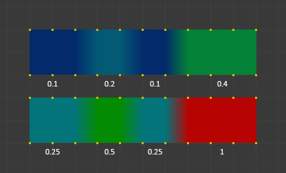
Ví dụ về Normalize.¶
Mirror¶
Công cụ Mirror Vertex Group đối xứng hóa các trọng số từ một bên của mesh đối xứng hoàn hảo sang bên kia. Những vertex không có vertex tương ứng ở bên kia sẽ không bị ảnh hưởng. Nhưng lưu ý, các trọng số không được chuyển sang group trọng số bone đối diện tương ứng.
Ghi chú
Phép đối xứng hóa chỉ hoạt động khi tư thế nghỉ (rest pose) của object đối xứng hoàn hảo qua trục X.
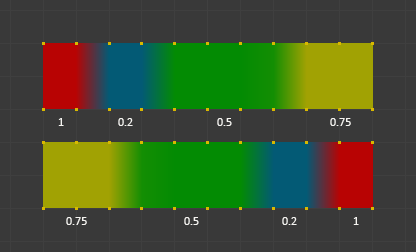
Ví dụ về Mirror.¶
- Mirror Weights
Khi tùy chọn này được bật, mỗi vertex được chọn sẽ nhận thông tin trọng số từ đỉnh đối xứng của nó. Nếu cả hai vertex đều được chọn, đó sẽ là một sự trao đổi thông tin trọng số; nếu chỉ một được chọn, thông tin từ vertex không được chọn sẽ ghi đè lên vertex được chọn. Thông tin trọng số chỉ được truyền cho group đang hoạt động, trừ khi All Groups được bật, khi đó nó được truyền cho tất cả các group.
- Flip Group Names
Hoạt động với các vertex được chọn thuộc các vertex group có "tên đối xứng" (với các thành phần như "L", "R", "right", "left"). Tất cả vertex được chọn thuộc group đang hoạt động, hoặc thuộc group đối xứng của group đang hoạt động, sẽ có việc gán của chúng vào group đó được thay bằng việc gán vào group đối xứng; tuy nhiên trọng số của chúng được giữ nguyên. Nếu All Groups được bật, mọi việc gán vào các loại group này sẽ được thay bằng group đối xứng tương ứng, cũng giữ nguyên trọng số cũ.
- All Groups
Thao tác trên tất cả vertex group, thay vì chỉ group đang hoạt động.
- Topology Mirror
Đối xứng hóa cho các mesh không đối xứng hoàn toàn (đối xứng gần đúng). Xem đây để biết thêm thông tin.
Mẹo
Mirror to Opposite Bone
Nếu bạn muốn tạo một group trọng số đối xứng cho bone đối diện (của một nhân vật đối xứng), bạn có thể làm như sau:
Xóa vertex group đích (nơi các trọng số đối xứng sẽ được đặt vào).
Tạo một bản sao của vertex group bone nguồn (group chứa các trọng số bạn muốn sao chép).
Đổi tên vertex group mới thành tên của vertex group đích (group bạn đã xóa ở trên).
Chọn vertex group đích và gọi công cụ Mirror (chỉ dùng Mirror Weights và tùy chọn Topology Mirror nếu mesh của bạn không đối xứng).
Invert¶
Thay mỗi trọng số của weight group được chọn bằng trọng số × -1.0.
Các ví dụ:
Giá trị gốc 1.0 chuyển thành 0.0
Giá trị gốc 0.5 giữ nguyên 0.5
Giá trị gốc 0.0 chuyển thành 1.0
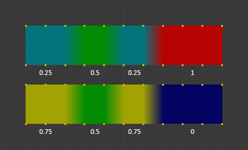
Invert.¶
- Subset
Giới hạn công cụ vào một tập con. Xem ở trên Tùy chọn Subset về cách định nghĩa các tập con.
- Add Weights
Thêm các vertex chưa có trọng số trước khi đảo ngược (các trọng số này sẽ đều được đặt thành 1.0).
- Remove Weights
Xóa các vertex khỏi vertex group nếu chúng bằng 0.0 sau khi đảo ngược.
Ghi chú
Các vertex group bị khóa không bị ảnh hưởng.
Clean¶
Clean Vertex Group Weights bỏ gán các vertex khỏi Vertex Group có trọng số thấp hơn Limit. Loại bỏ các trọng số dưới một ngưỡng cho trước. Công cụ này hữu ích để làm sạch các weight group khỏi những trọng số rất thấp (hoặc bằng 0).
Trong ví dụ hiển thị, giá trị cắt 0.2 được dùng (xem các tùy chọn của operator bên dưới) nên toàn bộ phần màu xanh được làm sạch.
Lưu ý, các ảnh dùng tùy chọn Active của Show Zero weights để những trọng số không được tham chiếu hiển thị bằng màu đen.
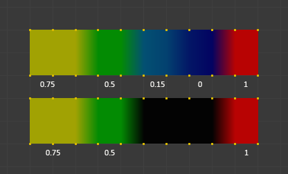
Ví dụ về Clean.¶
- Subset
Giới hạn công cụ vào một tập con. Xem ở trên Tùy chọn Subset để biết cách định nghĩa các tập con.
- Limit
Đây là giá trị trọng số tối thiểu sẽ được giữ lại trong group. Các trọng số thấp hơn giá trị này sẽ bị xóa khỏi group.
- Keep Single
Bảo đảm công cụ Clean sẽ không tạo ra các vertex hoàn toàn không được tham chiếu (vertex không được gán vào vertex group nào), nên mỗi vertex sẽ giữ lại ít nhất một trọng số, kể cả khi nó thấp hơn giá trị giới hạn!
Quantize¶
Operator này dùng một quá trình được gọi là lượng tử hóa vốn lấy các trọng số đầu vào và kẹp mỗi trọng số vào một số bậc nhất định giữa (0 - 1), nhờ đó không còn dải chuyển sắc mượt giữa các giá trị.
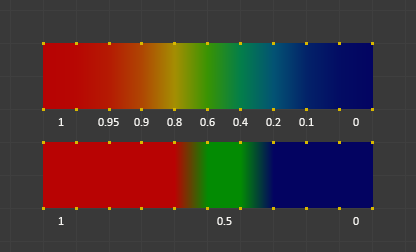
Ví dụ về Quantize (Steps = 2).¶
- Steps
Số bậc giữa 0 và 1 để lượng tử hóa các trọng số vào đó. Ví dụ 5 sẽ cho phép các trọng số sau
[0.0, 0.2, 0.4, 0.6, 0.8, 1.0].
Levels¶
Thêm một độ dịch và một hệ số co giãn vào tất cả trọng số của các weight group được chọn. Với công cụ này bạn có thể tăng hoặc giảm toàn bộ mức "nhiệt" của weight group.
Ghi chú
Không trọng số nào bao giờ bị đặt thành giá trị trên 1.0 hoặc dưới 0.0 bất kể cài đặt ra sao.
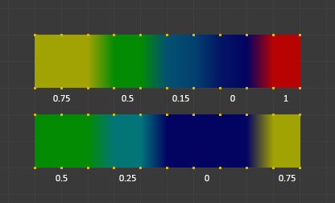
Ví dụ về Levels.¶
- Subset
Giới hạn công cụ vào một tập con. Xem ở trên Tùy chọn Subset để biết cách định nghĩa các tập con.
- Offset
Một giá trị trong khoảng (-1.0 - 1.0) được cộng vào tất cả trọng số trong vertex group.
- Gain
Tất cả trọng số trong Subset được nhân với hệ số khuếch đại (gain).
Ghi chú
Dù bạn chọn Gain và Offset ra sao, trong mọi trường hợp giá trị cuối cùng của mỗi trọng số đều bị kẹp vào khoảng (0.0 - 1.0). Vì vậy bạn sẽ không bao giờ nhận được trọng số âm hay vùng quá "nóng" (trọng số > 1.0) với công cụ này.
Smooth¶
Operator Smooth pha trộn trọng số của các vertex được chọn dựa trên giá trị trung bình của các vertex liền kề, tạo ra các chuyển tiếp mượt hơn trong weight painting. Operator này hữu ích để tinh chỉnh phân bố trọng số, cải thiện biến dạng khi rigging, và loại bỏ các chuyển tiếp đột ngột giữa các trọng số vertex.
Ghi chú
Operator này yêu cầu việc chọn vertex phải được bật; nếu không, nó sẽ không khả dụng.
- Subset
Giới hạn công cụ vào một tập con. Xem ở trên Tùy chọn Subset về cách định nghĩa các tập con.
- Factor
Điều khiển mức pha trộn về phía trọng số trung bình của các vertex kết nối với nhau.
Factor bằng 0.0 giữ nguyên các trọng số gốc.
Factor bằng 1.0 chấp nhận hoàn toàn trọng số trung bình đã tính.
Các giá trị giữa 0.0 và 1.0 pha trộn trọng số một cách tương ứng.
- Iterations
Đặt số lần lặp lại thao tác làm mượt. Giá trị cao hơn cho kết quả mượt hơn nhưng có thể tạo ra các lỗi không mong muốn ở chi tiết nhỏ.
- Expand/Contract
Điều chỉnh vùng ảnh hưởng của việc làm mượt bằng cách mở rộng hay thu hẹp vùng chọn:
Giá trị dương mở rộng vùng chọn để bao gồm cả các vertex lân cận.
Giá trị âm thu hẹp vùng chọn để tập trung vào một tập con vertex nhỏ hơn.
Ví dụ¶
Ví dụ: Một vertex được chọn
Hãy xét một vertex được chọn kết nối với bốn vertex không được chọn. Các vertex không được chọn có trọng số: 1, 0, 0 và 0. Trọng số trung bình của các vertex không được chọn là: \((1 + 0 + 0 + 0) / 4 = 0.25\)
Nếu Factor là:
0.0: Vertex được chọn giữ nguyên trọng số gốc của nó.
1.0: Vertex được chọn nhận trọng số trung bình đã tính (0.25).
Giữa 0 và 1: Trọng số của vertex dịch dần về phía 0.25, pha trộn theo tỷ lệ.
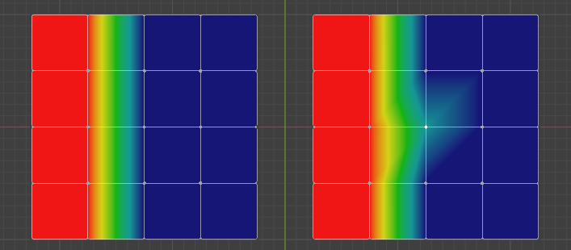
Chọn một vertex duy nhất với Factor bằng 1.0.¶
Ví dụ: Nhiều vertex được chọn
Khi nhiều vertex được chọn, operator Smooth áp dụng phép tính cho từng vertex dựa trên các vertex liền kề không được chọn của nó.
Ví dụ:
Một vertex kết nối với ba vertex không được chọn có trọng số \((1, 0, 0)\) sẽ có trung bình \(0.333\).
Một vertex kết nối với một vertex không được chọn có trọng số 1 sẽ có trung bình \(1.0\).
Một vertex chỉ kết nối với các vertex không được chọn có trọng số \((0, 0, 0)\) sẽ giữ nguyên với trọng số trung bình \(0.0\).
Các kết quả pha trộn này phụ thuộc vào giá trị Factor.
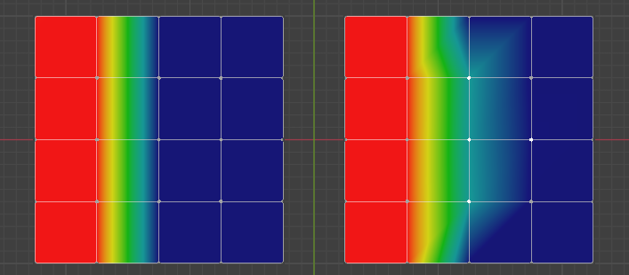
Ba vertex được chọn với Factor bằng 1.0.¶
Ví dụ: Làm mượt edge loop
Trong một tình huống thực tế, việc chọn một edge loop ở giữa cho phép operator pha trộn trọng số giữa các vùng liền kề. Ví dụ:
Edge loop có hai vertex liền kề không được chọn ở mỗi bên, với trọng số \(1\) và \(0\).
Trọng số trung bình là \((1 + 0) / 2 = 0.5\).
Áp dụng operator Smooth với Factor đặt thành 1.0 sẽ làm edge loop chuyển sang màu xanh lá, tạo sự pha trộn mượt giữa phía "nóng" (trái) và "lạnh" (phải).
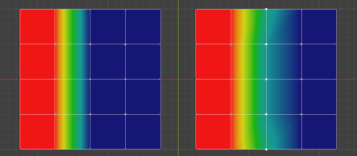
Edge loop vertex ở giữa được chọn với Factor bằng 1.0.¶
Transfer Weights¶
Sao chép trọng số từ các object khác sang vertex group của object đang hoạt động.
Theo mặc định, công cụ này chỉ sao chép vertex group đang hoạt động (được chọn) của object nguồn sang vertex group đang hoạt động của object đích, hoặc tạo group mới nếu group đó không tồn tại. Tuy nhiên, bạn có thể thay đổi hành vi của công cụ trong panel Adjust Last Operation.
Ví dụ, để chuyển tất cả vertex group hiện có từ các object nguồn sang object đích, hãy đổi tùy chọn Source Layers Selection thành By Name.
Ghi chú
Công cụ này dùng cơ chế "truyền dữ liệu" tổng quát, nhưng truyền từ tất cả object được chọn sang object đang hoạt động. Vui lòng tham khảo tài liệu Data Transfer để biết chi tiết và giải thích các tùy chọn.
Chuẩn bị sao chép¶
Trước tiên bạn chọn tất cả object nguồn, và cuối cùng là object đích (object đích phải là object đang hoạt động).
Điều quan trọng là các object nguồn và object đích phải ở cùng một vị trí. Nếu chúng được đặt cạnh nhau, việc chuyển trọng số sẽ không hoạt động. (Xem tùy chọn Vertex Mapping.) Bạn có thể đặt các object trên các layer khác nhau, nhưng phải bảo đảm tất cả object đều hiển thị khi bạn gọi công cụ.
Bây giờ hãy bảo đảm object đích đang ở Chế độ Weight Paint. Mở Toolbar và gọi công cụ Transfer Weights trong panel Weight Tools.
Nhầm lẫn với panel Adjust Last Operation¶
Bạn có thể nhận thấy panel Adjust Last Operation vẫn còn ở đó sau khi việc chuyển trọng số hoàn tất. Panel này chỉ biến mất khi bạn gọi một Operator khác có panel Adjust Last Operation riêng. Điều này có thể gây nhầm lẫn khi bạn dùng Transfer weights lặp lại sau khi đã thay đổi vertex group. Nếu khi đó bạn dùng panel Adjust Last Operation vẫn đang hiển thị, Blender sẽ đặt lại công việc của bạn về trạng thái ngay trước khi bạn lần đầu gọi công cụ Transfer Weights.
Vì vậy, khi bạn muốn gọi lại công cụ Transfer Weights sau khi đã thay đổi vertex group, thì luôn luôn dùng nút Transfer Weights, kể cả khi panel Adjust Last Operation vẫn còn khả dụng. Trừ khi bạn thực sự muốn đặt lại các thay đổi về trạng thái lúc ban đầu gọi công cụ.
Limit Total¶
Giảm số lượng weight group trên mỗi vertex xuống mức Limit đã chỉ định. Công cụ xóa các trọng số thấp nhất trước cho đến khi đạt đến giới hạn.
Gợi ý
Công cụ chỉ có thể hoạt động hợp lý khi nhiều hơn một weight group được chọn.
- Subset
Giới hạn công cụ vào một tập con. Xem ở trên Tùy chọn Subset để biết cách định nghĩa các tập con.
- Limit
Số trọng số tối đa được phép trên mỗi vertex.
Set Weight¶
Tham khảo
- Mode:
Chế độ Weight Paint
- Menu:
- Shortcut:
Ctrl-X
Tô đầy vertex group đang hoạt động bằng trọng số vẽ hiện tại.
Sample Weight¶
Tham khảo
- Mode:
Chế độ Weight Paint
- Menu:
- Shortcut:
Shift-X
Điều chỉnh Trọng số của công cụ Draw theo trọng số của vertex nằm dưới con trỏ chuột.
Sample Group¶
Tham khảo
- Mode:
Chế độ Weight Paint
- Menu:
- Shortcut:
Shift-Ctrl-X
Chọn một trong các vertex group có tại vị trí chuột hiện tại.
Gradient (Linear)¶
Tham khảo
- Mode:
Chế độ Weight Paint
- Menu:
- Shortcut:
Shift-A
Áp một dải trọng số tuyến tính; điều này hữu ích trong những lúc việc vẽ các thay đổi trọng số dần dần trở nên khó khăn. Pha trộn trọng số của các vertex được chọn với các vertex không được chọn.
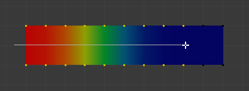
Ví dụ về công cụ Gradient được dùng với các vertex được chọn.¶
- Weight
Dải gradient bắt đầu từ giá trị trọng số đang được chọn hiện tại, phai dần về không.
- Strength
Có thể dùng các giá trị thấp hơn để gradient hòa trộn với các trọng số sẵn có (giống như với brush).
- Type
Hình dạng của gradient.
- Linear:
Tạo gradient dạng một đường thẳng.
- Radial:
Tạo gradient dạng một hình tròn.
Gradient (Radial)¶
Tham khảo
- Mode:
Chế độ Weight Paint
- Menu:
- Shortcut:
Shift-Alt-A
Áp một dải trọng số xuyên tâm; điều này hữu ích trong những lúc việc vẽ các thay đổi trọng số dần dần trở nên khó khăn. Pha trộn trọng số của các vertex được chọn với các vertex không được chọn.
- Weight
Dải gradient bắt đầu từ giá trị trọng số đang được chọn hiện tại, phai dần về không.
- Strength
Có thể dùng các giá trị thấp hơn để gradient hòa trộn với các trọng số sẵn có (giống như với brush).
- Type
Hình dạng của gradient.
- Linear:
Tạo gradient dạng một đường thẳng.
- Radial:
Tạo gradient dạng một hình tròn.
Locks¶
Tham khảo
- Mode:
Chế độ Edit Mode và Weight Paint Mode
- Menu:
- Shortcut:
K
Vertex group có thể bị khóa để ngăn các chỉnh sửa không mong muốn vào một vertex group cụ thể.
Mẹo
Các bone thuộc về một vertex group bị khóa sẽ hiển thị màu đỏ trong 3D Viewport.
- Lock All
Khóa tất cả vertex group.
- Lock Selected
Khóa các vertex group được chọn.
- Lock Unselected
Khóa các vertex group không được chọn.
- Lock Only Selected
Khóa các vertex group được chọn và mở khóa các vertex group được chọn.
- Lock Only Unselected
Mở khóa các vertex group được chọn và khóa các vertex group không được chọn.
- Unlock All
Mở khóa tất cả vertex group.
- Unlock Selected
Mở khóa các vertex group được chọn.
- Unlock Unselected
Mở khóa các vertex group không được chọn.
- Invert Locks
Đảo ngược trạng thái khóa trên tất cả vertex group.